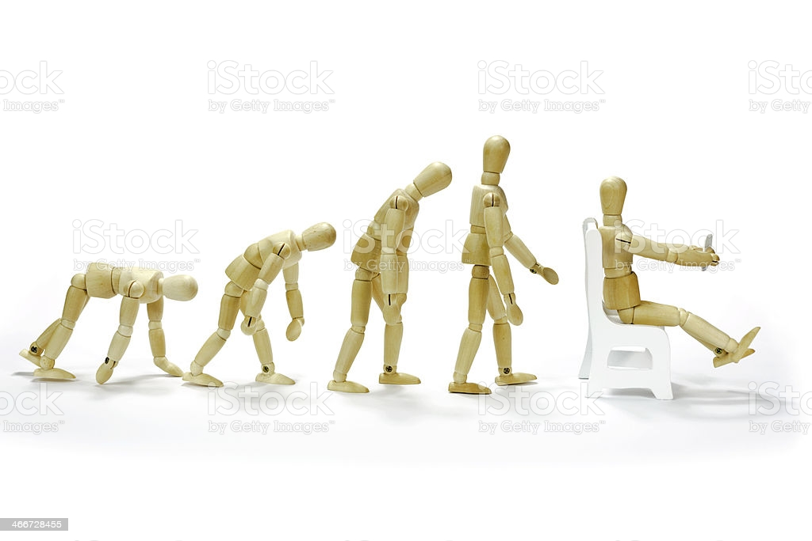

Week 2 Reading Responses
As We May Think
The gradual growth of humanity followed by its stunt from technology
Question: Society portrays a pattern and need for "regression" where some people desire to revert back to previous forms of technology. What do you think society ought to do about technology and humanity's direct dependency towards it?
Personally, what interested me the most regarding this text was understanding how it related to humanity and its progression. He argues that humanity utilized many forms of technology and science to simply aid humans in their basic necessities upwards to their success in social settings. We can argue under a certain lens therefore that science also functioned as a way for humans to become almost lazier in a way. Additionally, I was also surprised by how he frames information. In one way, information is now much more attainable and recordable due to advancements of technology and science. However, he poses that sucha advancements jepoardize the importance of text and recordings in the first place. It requires much more effort to find crucial information now that almost everything in recorded.
Long Live the Web
The crucial points of interest from this Long Live the Web stem from understanding the benefits of having freedom in the Web. I did not understand or realize just how advantageous having these limitless standards could be for humans. Without the need for checks from authorities etc. there comes an interest balance in freedom and stability in the mere fact that the web upholds this freedom. Another interesting point was separating the web and the internet and the analogies he makes with these two concepts. I always assumed that the web and the internet were synonymous and interchangeable. But understanding these crucial differences and their independence from one another was yet another point that I learned from reading this text.